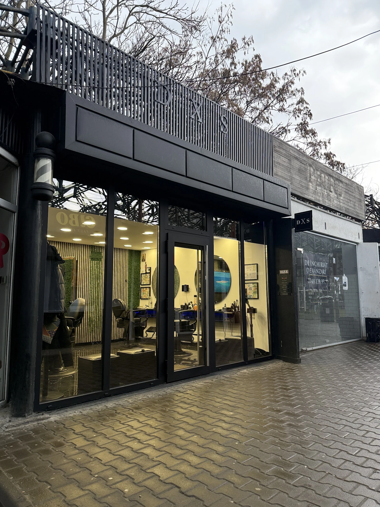
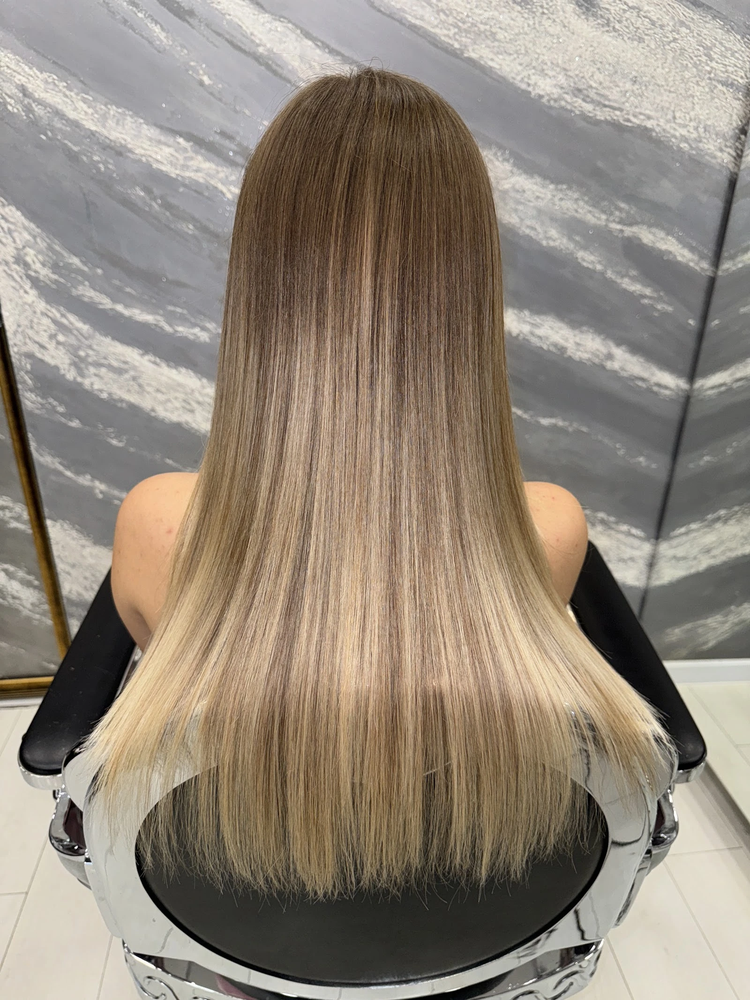
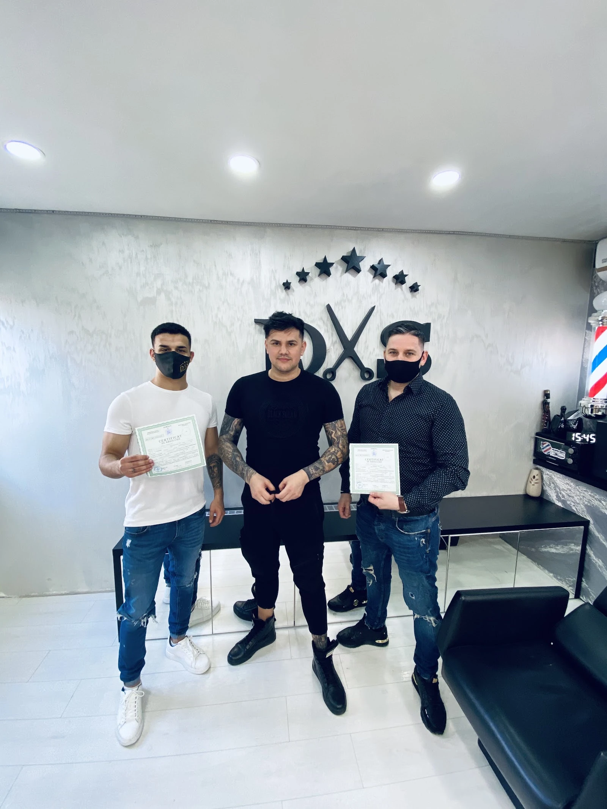
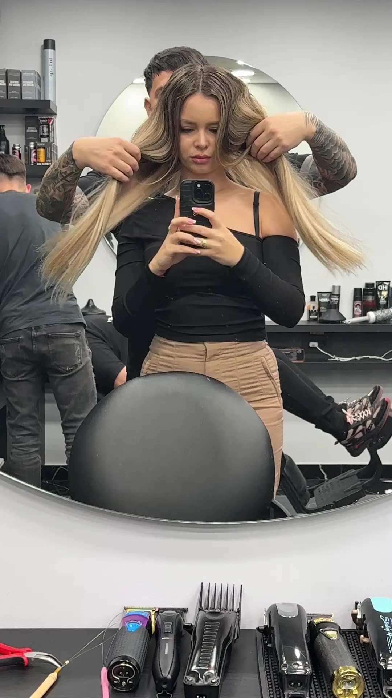
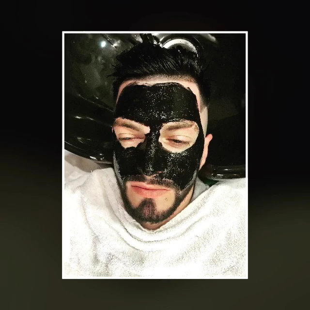
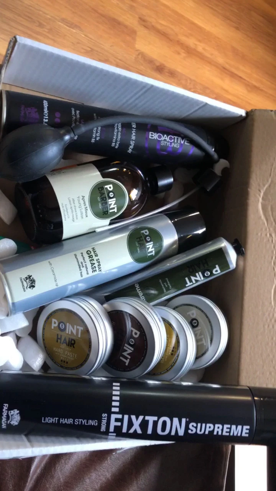

{{Frizerie · Rond Târgu Cucu, Iași|Barbershop · Rond Târgu Cucu, Iași|Barbearia · Rond Târgu Cucu, Iași}}
HAIR STUDIO DxS
{{Scaunul tău e liber. Tuns, barbă și styling într-un salon de marmură gri, oglinzi mari și scaune de piele.|Your seat is free. Cuts, beards and styling in a shop of grey marble, big mirrors and leather chairs.|O seu lugar está livre. Corte, barba e styling num salão de mármore cinzento, espelhos grandes e cadeiras de couro.}}
5,0 · 579 {{recenzii Google|Google reviews|avaliações Google}}{{Luni 11:00–19:00 · restul zilelor: de confirmat|Mon 11:00–19:00 · other days: to be confirmed|Segunda 11:00–19:00 · restantes dias: a confirmar}}
02 · {{Servicii|Services|Serviços}}
{{Ce se întâmplă pe scaun|What happens in the chair|O que acontece na cadeira}}
{{Alege ce ai nevoie și îl treci direct în programare.|Pick what you need and it goes straight into your booking.|Escolha o que precisa e passa direto para a marcação.}}
{{Tuns și fade|Cut and fade|Corte e degradê}}
{{Tuns bărbătesc, cu degrade și linii curate, finisat cu styling.|Men’s cut with a fade and clean lines, finished with styling.|Corte masculino com degradê e linhas limpas, finalizado com styling.}}
{{Alege|Pick|Escolher}} →{{Barbă|Beard|Barba}}
{{Contur și formă pentru barbă, la fel de atent ca tunsul.|Shape and outline for the beard, as careful as the cut.|Contorno e forma da barba, tão cuidados como o corte.}}
{{Alege|Pick|Escolher}} →{{Păr lung|Long hair|Cabelo comprido}}
{{Aranjat și coafat pentru păr lung, cu oglinda și lumina bună a salonului.|Styling for long hair, with the shop’s mirrors and good light.|Penteado para cabelo comprido, com os espelhos e a boa luz do salão.}}
{{Alege|Pick|Escolher}} →{{Tratament cu keratină|Keratin treatment|Tratamento de queratina}}
{{O clientă spune că rezultatul s-a ținut luni la rând.|One client says the result held for months.|Uma cliente diz que o resultado durou meses.}}
{{Alege|Pick|Escolher}} →{{Mască facială|Face mask|Máscara facial}}
{{Îngrijire a feței, pe scaunul de la spălător.|Face care, at the wash chair.|Cuidado do rosto, na cadeira do lavatório.}}
{{Alege|Pick|Escolher}} →{{Produse de styling|Styling products|Produtos de styling}}
{{Pomezi, ceară și spray-uri profesionale, ca să ții acasă forma de pe scaun.|Pomades, waxes and pro sprays so the shape lasts at home.|Pomadas, ceras e sprays profissionais para manter a forma em casa.}}
{{Întreabă la telefon|Ask by phone|Pergunte por telefone}} →
{{Prețuri: de confirmat, le spune salonul la telefon. Lista completă de servicii: de confirmat.|Prices: to be confirmed, the shop gives them by phone. Full service list: to be confirmed.|Preços: a confirmar, o salão diz por telefone. Lista completa de serviços: a confirmar.}}
03 · {{Salonul|The shop|O salão}}
{{Marmură, oglinzi, scaune de piele|Marble, mirrors, leather chairs|Mármore, espelhos, cadeiras de couro}}






5,0
· 579 {{recenzii pe Google|Google reviews|avaliações no Google}}
{{Ce spun cei care au stat pe scaun|What people say after the chair|O que dizem depois da cadeira}}
- {{Clienții laudă băieții pentru pricepere și pentru atenția la fiecare detaliu.|Clients praise the guys for their skill and attention to every detail.|Os clientes elogiam os rapazes pela perícia e pela atenção a cada detalhe.}}
- {{O clientă a făcut tratament cu keratină și spune că rezultatul se menține și după luni, iar părul se aranjează mai ușor.|One client had a keratin treatment and says the result lasts months later and the hair is easier to style.|Uma cliente fez tratamento de queratina e diz que o resultado se mantém meses depois e o cabelo fica mais fácil de arranjar.}}
- {{Un alt client scrie că alegerea frizerului nu înseamnă doar un tuns: prima impresie contează.|Another client writes that choosing a barber is about more than a cut: first impressions count.|Outro cliente escreve que escolher o barbeiro é mais do que um corte: a primeira impressão conta.}}
{{Rezumat, cu cuvintele noastre, al recenziilor publice de pe Google.|A summary, in our own words, of public Google reviews.|Resumo, por palavras nossas, das avaliações públicas do Google.}}
04 · {{Programare|Booking|Marcação}}
{{Scaunul tău|Your seat|O seu lugar}}
{{Alegi serviciul, ziua și ora. Cererea pleacă gata scrisă pe WhatsApp sau SMS, iar salonul ți-o confirmă.|Pick the service, the day and the time. The request goes out ready-written by WhatsApp or SMS, and the shop confirms it.|Escolha o serviço, o dia e a hora. O pedido segue já escrito por WhatsApp ou SMS e o salão confirma.}}
05 · Contact
{{Cum ajungi|How to find us|Como chegar}}
- {{Adresa|Address|Morada}}
- Rond Târgu Cucu poziția 10
700259 Iași - {{Telefon|Phone|Telefone}}
- 0747 533 806
- {{Program|Hours|Horário}}
- {{Luni 11:00–19:00
Restul zilelor: de confirmat|Monday 11:00–19:00
Other days: to be confirmed|Segunda 11:00–19:00
Restantes dias: a confirmar}}